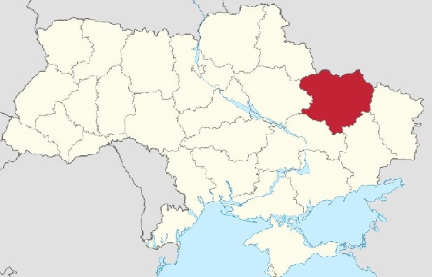

Ха́рківська о́бласть (Харківщина) — область у Слобідській Україні в межах Придніпровської низовини і Середньоруської височини.
 Область розташована на сході України. Вона межує на
заході :
- Сумська область;
- Полтавська область;
-
півночі :
- Бєлгородська область роcсії;
сході :
- Луганська область;
-
півдні :
- Дніпропетровська область;
- Донецька область;